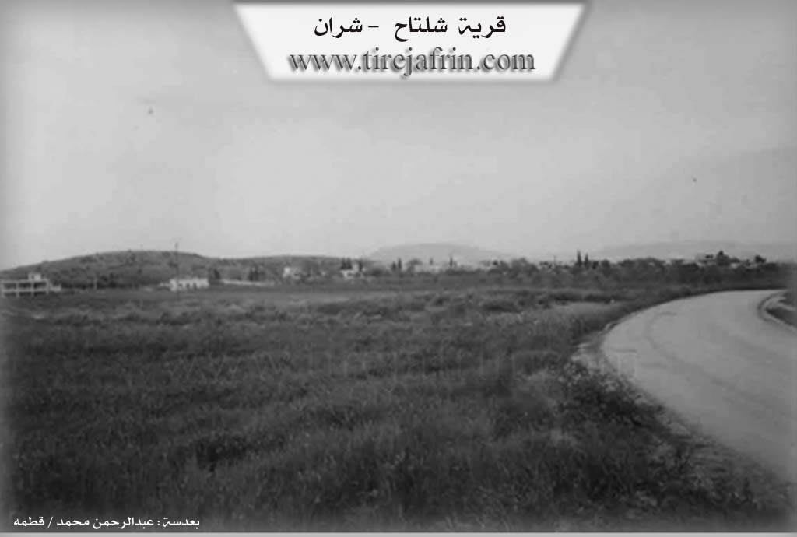

General Information
Nahiya (Subdistrict)
Şera
Also Known As
Sheltah, Şiltehtê, Şîltahetê, Şîlte'tê, Şîltehtê, شلتاح, شيل تعتيه
Tribes
Hecî Omerliyan, Rûşkiyan
Families, Clans, etc.
Birîmê Kekec, Ebdo Silo, Elikê Urê, Elkoçer, Elkûrê, Faiq Axa, Hesen Naso, Kêlê, Mihemedê Usê, Okaşo, Reşik, Reşkî Sêvo

Photos



Basic Information about Şîlte'tê
Source: Ax û Welat
Etymology: Derived from Şîl (wet) and Tat or Teht (bedrock), meaning Wet Bedrock, because the ground beneath the village is permanently wet due to abundant underground water
Foundation Date/Period: Approximately 100 years ago
Springs: Kaniya Nebî Hûrî
Hills: Çiyayê Qelîç, Çiyayê Cîran Dep
Shrines: Kewsane
Ruins: Keleha Hûrî
Other Landmarks: Ava Efrînê, Ava Sabûnê, Ava Germikê, Gula Masiyan, Geliyê Gura, Geliyê Şêx Dîn, Geliyê Cinhemamê, Deşta Kifirê, Deşta Kutukli, Deşta Mazi
Summaries
I. Summary from TirejAfrin Site (English) of Şîlte'tê
Source: https://www.tirejafrin.com/site/kura%20afrin%20%20sheran%20-%20Sheltata.htm
The following is stated in the book جبل الكرد (عفرين) دراسة جغرافية Çiyayê Kurmênc (Efrîn): A Geographical Study: Şlte't, Şiltah / 280 people, 300H, 15km, 430m /:
Şiltah: The origin of the word is Şiltah, and it means the blue rocks. However, the letter l was substituted for n, which is a possible occurrence in the Kurdish language. The rocks in those parts are of various colors, but those that appear near the Çemê Efrînê (Efrîn river) tend towards a greyish color tinged with blue, so that they appear light blue in color.
It is a small village situated on a plateau that slopes steeply towards the valley of the Çemê Efrînê (Efrîn river) in the east, and it abuts the Turkish border from the north. Archaeological ruins and caves exist around it.
The following is stated in the book عفرين .... نهرها وروابيها الخضراء Efrîn... Her River and Her Green Hills: Şiltah is a village in Çiyayê Kurmênc administratively belonging to the Şeran district, Efrîn region, Heleb governorate (263 people). It is a small village situated on a wide and undulating limestone plateau that slopes steeply towards the valley of the Çemê Efrînê (Efrîn river) to the east, and slowly towards the south and west. Its soil is clay and pastures are spread over it. It is 15km away from the town of Şeran towards the northeast, and it abuts the current borders with Turkey. The settlement of the area is ancient as evidenced by the presence of ruins and caves around it and near the Turkish border on the eastern side.
It is bordered on the north by a deep valley and the Turkish Syrian border point directly at a distance of 200 meters. To the south, it is bordered by a valley, a fertile plain, and the course of the Çemê Efrînê (Efrîn river). To the east, it is bordered by a slope, a valley, the course of the Çemê Efrînê (Efrîn river), and the Turkish Syrian border point. To the west, it is bordered by a valley, a fertile agricultural plain planted with olive trees, the village of Dêr Sewan, and the archaeological Pira Nebî Hûrî (Prophet Huri bridge) which is named the bridge of Nebî Hûrî.
The number of its houses amounts to about 35 houses, and the age of the village is about 150 years. Its old houses are made of stone and mud with wooden roofs, while the modern dwellings are made of cement and stone. An electricity network is available there, and the village drinks from a water network connected to the artesian well on its eastern side. There is a paved road up to the center of the village and the village of Mersawa.
The village contains a primary school, a mosque, and a border police station. Its inhabitants work in the cultivation of olives and vines and in raising livestock. It has telephone lines and a modern olive press located near the Pira Romanî (Roman bridge), which is three kilometers away from the bridge. It is a border village on the eastern edge of Efrîn.
Village Mukhtar: Mihemed Hemo
Sources of Information:
- Book: جبل الكرد (عفرين) دراسة جغرافية Çiyayê Kurmênc (Efrîn): A Geographical Study by د. محمد عبدو علي Dr. Mihemed Ebdo Elî.
- Book: عفرين .... نهرها وروابيها الخضراء Efrîn... Her River and Her Green Hills by عبدالرحمن محمد Ebdulrehman Mihemed from the village of Qetme.
- Studies of Navenda Tirej Soft / Ebdulrehman Hacî Osman.
- Some residents of the villages.
Preparation and Execution: Manager of the site Tirej Efrîn: Ebdulrehman Hacî Osman 20/12/2013
II. Summary of Şîlte'tê from Ax û Welat
Source: https://www.youtube.com/watch?v=UtvYRj3RiGo
The village of Şîltat, also referred to as Şîl Tehtê, is a settlement defined by its abundance of water and its proximity to the border between Bakur and Rojava. Located in the Rajo district of Efrîn, the village sits on the Deşta Kifirê and derives its name from the Kurdish words for "wet" and "bedrock." Residents explain that the Tat or rock foundation beneath the village is permanently damp due to the high water table. The village is historically significant as the entry point where Ava Efrînê flows from Bakur into Rojava. It is flanked by Ava Efrînê on the east and Ava Sabûnê on the west, while Ava Germikê, a stream sourced from the springs of Keleha Hûrî, runs through the area.
The modern village was established approximately one hundred years ago, though the land previously belonged to the Hecî Omerliyan tribe, specifically landlords from Bakur. Before the borders were hardened, these lands were used by the Hecî Omerliyan, who later retreated to Kilis and Qernêbî. The current population consists largely of settled nomads. The first three families to establish the modern village, Mihemedê Usê, Elikê Urê, and Ebdo Silo, migrated from Dêrswan. Subsequent waves of migration brought families such as Eliko Çerê, Birîmê Kekec, Hesen Naso, Reşkî Sêvo, and Kêlê from places like Qerşa, Qurta, Berkaşê, and Bircqasê. The majority of these residents belong to the Rûşkiyan tribe and originally maintained a lifestyle focused on shepherding.
Religious and healing practices are woven into the local geography. A sacred site known as Kewsane, located between Şîltat and the neighboring village of Mersawa, is visited by people seeking healing for ailments such as headaches or leg pain, particularly on Wednesdays. The village is also located very close to the historical ruins of Keleha Hûrî, which serves as the source for the Ava Germikê. This water is famous for staying warm during the winter, giving it its name, and is used for both drinking and irrigation.
Culturally, Şîltat maintains close ties to the city of Kilis, which is only about ten kilometers away. This influence is visible in their culinary traditions, particularly the making of Kunefe with walnuts, a practice residents attribute to their proximity to Kilis. The village is also known for Gula Masiyan, a man made fish pond fed by the waters of Keleha Hûrî, established by the son of Faiq Axa. Economically, the village relies on olive cultivation and vegetable farming, utilizing the fertile wet soil to grow crops ranging from cucumbers to melons. Residents also preserve traditional wedding customs, such as the henna night where the groom's family must negotiate with the bride's family, singing specific songs to win the bride.
II. Ax û Walat Book 1
THE VILLAGE OF ŞÎLTEHTÊ
26.1.2016
The village of Şîltehtê, which is on a wide plain on the border between north and west Kurdistan, is affiliated with the Şera district of Efrîn canton, located about 18 km north of the town of Şera.
The name of the village Şîltehtê comes from the meaning (wet slab or wet board), because the village lands are full of slabs and stones, and there is water underneath, meaning it is always wet. It is worth mentioning that the village of Şîltehtê is located 10 km west of the town of Kilisê, before the border between North and Rojava was established,
156
it was affiliated with Kilisê. Many of the villagers' fields are on the border line, and their relatives are also in the villages across the border, and social relations have not been cut off and are still ongoing.
The village of Şîltehtê was the village of (Murad Axa and Şewket Axa), who were from the village of Bekerê across the border, and later they went and settled in the village of Qernebî near Kilisê.
There are 7 main families in the village:
The family of Elkûrê, Kêlê, Elgoçerê, Ebdê Silo, Ukaşo, Mihemedê Osê, and the Rêşik family.
Each family has come from a different area, but most of the families are migrants.
About 100 houses and around 800 people live in the village. There are 4 martyrs from the village: Demhat, Rêdûr, Mistefa, and Yesmîn.
The village of Şîltehtê is famous for its abundance of wells and springs. There are about 60 water wells that have been dug by the village residents. The water of the Germikê Stream is to the west of the village, and its water comes from the springs of the Horî Citadel. Because its water is always warm, it has been given this name, and it is simple water, very clean and suitable for drinking. The villagers also irrigate their fields and gardens with it.
The Efrînê River comes from the north, and this river is formed from water springs, but in the north, it dries up in the summer. The village of
157
Şîltehtê is the first village through which the water of the Efrînê River passes after entering Rojava. The two rivers, Germikê and Efrînê, meet at the bottom of the village, about 5 km away, and flow as one river to the Meydankê dam.
The main road of the village passes between two ancient bridges which are to the south of the village.
The Horî Citadel is about 4 km southwest of the village. To the west of the village is the Gura Valley, to the south is the Şêxdînkê Valley, and to the east is the Cin Hemamê Valley. The Qilîçê Mountain is to the southeast of the village, and the Cîran Depe Mountain is behind the border to the north. The Kutuklî Plain is to the west of the village, all covered with olive trees. The Mazî Plain is to the southwest. The Henarê Plain is to the south, all planted with grains and wheat.
The residents of the village make their living from agriculture. Besides olives, the people of the village plant fields of wheat, barley, and lentils, and they also plant vegetable gardens and sell their products in the markets of Efrînê. About 40 years ago, cotton was planted here, but now no one plants it. Before the planting season, the villagers prepare vegetable and tree seedlings and plant their seeds in bags until they can be planted in the fields in the spring or sold at the markets.
The people of the village only hunt partridges and rabbits in the surrounding area as a hobby, and because the water streams are close to the village, some people also fish. In
158
the village, there is a fish farm for raising fish, and its fish are sold to restaurants and also in the markets of Efrînê.
There is an ancient olive press in the village, and it still operates. There is also a sewing workshop in the village, and 8 workers work there, making a living for their families. Previously, there were 3 chicken farms for raising chickens in the village, but due to the shortage of chicken feed, they were all closed.
The Turkish soldiers create many obstacles for the villagers when they go to their fields. This has caused about 8 people from the village to lose their legs due to the explosion of mines that have been planted on the border.
Transcriptions and Subtitles
| Source | Video | Subtitles | Transcript |
|---|---|---|---|
| Ax û Welat 1 | Watch Video | Download SRT | View Transcript |
Foundation/Origin Information of Şîlte'tê
Founded by the Olani tribe, who migrated from the Hecî Omellî region of Dersim in Northern Kurdistan. The village was historically administered as part of Kilis before the modern borders were drawn.
Source: Ax û Walat Transcript
Possible Village Name Meaning of Şîlte'tê
The origin of the word "Sheltah", meaning "blue rocks". The rocks of those areas are of different colors, with what appears near the Afrin River tending toward an ash-gray color mixed with blue.
Source: TirejAfrin Site
The village derives its name from the Kurdish "şil teht" (wet rock), a reference to a perpetually damp local rock formation.
Source: Ax û Walat Transcript